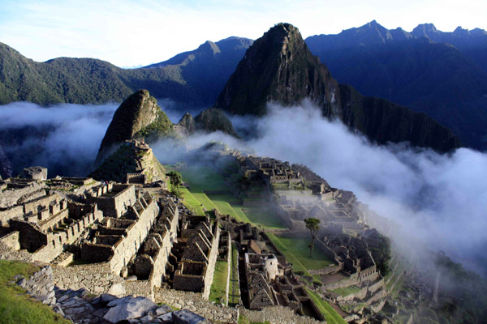
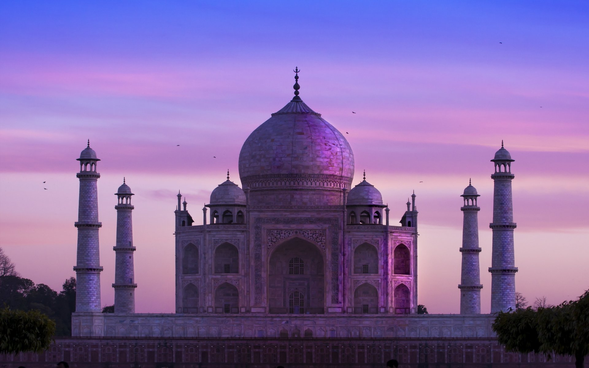
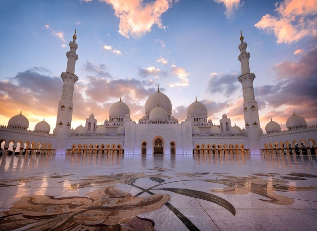
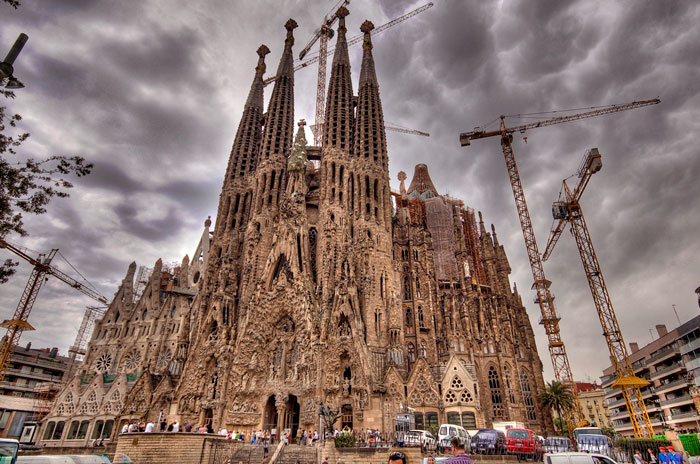
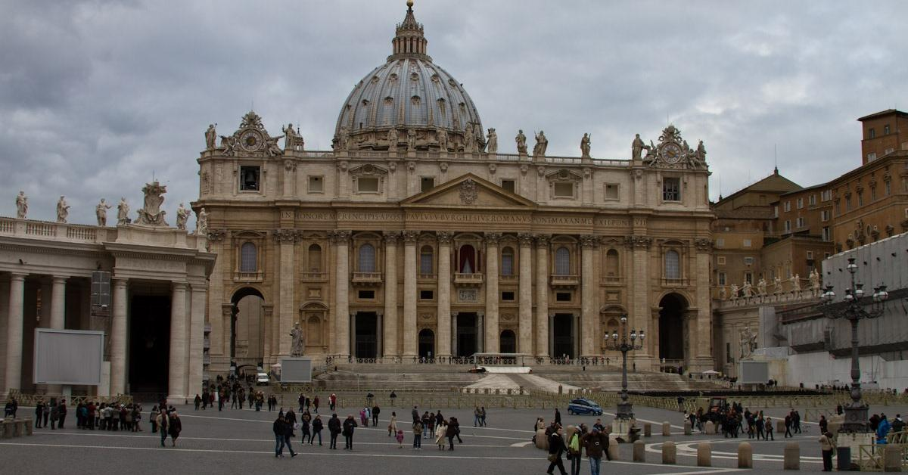
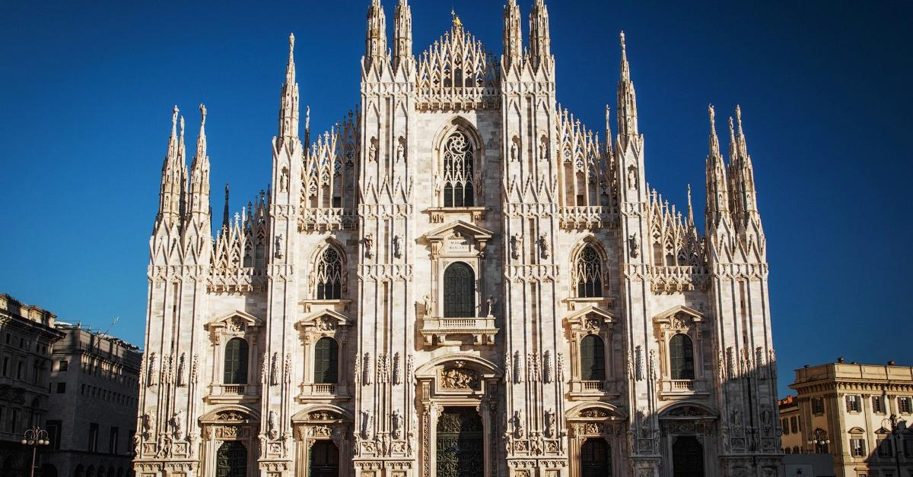

Визначні місця світу
1. Анкор-Ват, Камбоджа Angkor Wat, Cambodia
Ангкор-Ват (в перекладі із кхмерської – “Столичний храм”) — спочатку індуїстський, а потім буддійський храмовий комплекс ХІІ століття в Камбоджі. Розташований за 5,5 км на північ від сучасного міста Сієм Ріп. Побудований за часів короля Сур’явармана II, який правив у 1113-1150 роках. Ангкор-Ват – найбільша культова споруда у світі та одна з найважливіших історичних пам’яток на планеті.

2. Мачу-Пікчу, Перу Machu Picchu, Peru
Мачу-Пікчу (з мови кечуа – “Стара вершина”) — доколумбове місто інків, розташоване в Андах на висоті 2400 м на вершині гірського хребта над долиною річки Урубамби в Перу, за 80 км від сучасного міста Куско. Мачу-Пікчу також стало символом колись могутньої Імперії інків. Його називають “місто у хмарах”та “втраченим містом інків”. Вважається, що місто було споруджене як священний гірський притулок великим правителем інків Пачакутеком за сторіччя до падіння його імперії, тобто приблизно в 1440 році. Мешканці покинули Мачу-Пікчу в 1532 році, невдовзі після вторгнення в їхню країну іспанських завойовників. Хоча конкістадори так і не дісталися до Мачу-Пікчу. Місто не було зруйноване, тим вища історична цінність Мачу-Пікчу.
3. Тадж-Махал, Індія Taj Mahal, India
Тадж-Махал (з урду – “Корона-палац”) – мавзолей-мечеть, розташований в індійському місті Агра на березі річки Джамна. Побудований у 1632-1653 роках за наказом нащадка Тамерлана – падишаха Імперії Великих Моголів Шах-Джахана на згадку про його кохану дружину Мумтаз-Махал (в дівоцтві Арджуманад Бану Бегам), яка померла при пологах 14-ї дитини. Тадж-Махал – перлина мусульманської архітектури в Індії – вважається найкращим зразком архітектури стилю моголів, який поєднує в собі елементи перського, індійського та ісламського архітектурних стилів.
4. Мечеть шейха Зайєда, ОАЕ Sheikh Zayed Grand Mosque Center, UAE
Мечеть шейха Зайєда – одна з шести найбільших мечетей у світі, розташована в Абу-Дабі, столиці ОАЕ. Названа на честь шейха Зайєда ібн Султана ан-Нахайяна – засновника і першого президента Об’єднаних Арабських Еміратів, похованого поруч. Мечеть із мармуру, що вміщує 40 тисяч людей, була офіційно відкрита в місяць рамадан 2007 року. Храм має 82 куполи різного розміру, а також чотири мінарети заввишки 107 метрів.
5. Собор Саграда Фамілія, Іспанія Basilica Of The Sagrada Familia, Spain
Собор Саграда Фамілія, або Святого Сімейства (повна назва – Спокутний храм Святого Сімейства) – католицький храм у Барселоні, столиці Каталонії, в районі Ешампле. Ця церква будується за проектом видатного архітектора Антоніо Гауді вже протягом більш як 130 років – починаючи з 1882 року. Відтак це найвідоміший довгобуд світу. За рішенням ініціаторів будівництва храму, фінансування робіт має відбуватися суто за рахунок пожертв парафіян. Це є головною причиною такого тривалого будівництва. Сам Гауді на запитання про незвично довгі терміни робіт відповідав: “Мій клієнт не квапиться”.
6. Собор Святого Петра, Ватикан St. Peter’s Basilica, Vatican
Собор Святого Петра – головний католицький собор у світі, найбільша історична християнська церква та центральна споруда держави-міста Ватикан. Це одна з чотирьох патріарших базилік Риму і церемоніальний центр Римо-католицької церкви. Вівтар храму розміщений над могилою, яку з ІІ ст. вважають похованням апостола Петра, що прийняв у 66 році мученицьку смерть у римському цирку Нерона.
7. Міланський собор, Італія Milan Cathedral (Duomo), Italy
Міланський собор (італійською – Duomo di Milano) – кафедральний собор у Мілані, символ північної столиці Італії, розташований у самому історичному центрі міста. Присвячений Різдву Пресвятої Діви Марії. Побудований у класичному стилі полум’яної готики з білого мармуру. Будівництво розпочато ще в 1386 році, однак завершилося тільки на початку XIX століття, коли за розпорядженням Наполеона було закінчено оформлення фасаду. Деякі деталі дороблялися навіть пізніше – аж до 1965 року.
На головну